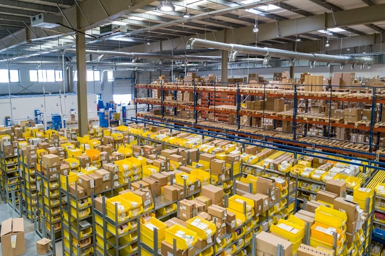
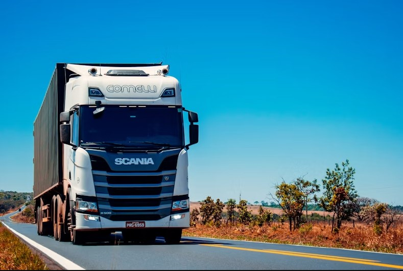

Prioritario
Express Aéreo Tarapoto - Lima
Conexión directa prioritaria en menos de 24 horas. Ideal para sobres, documentos legales y muestras comerciales.
Ver horarios →Soluciones logísticas para la región San Martín y envíos a nivel nacional.
Transporte rápido y seguro adaptado a tus necesidades

Conexión directa prioritaria en menos de 24 horas. Ideal para sobres, documentos legales y muestras comerciales.
Ver horarios →
Salidas diarias hacia Moyobamba, Yurimaguas, Chiclayo, Trujillo y Lima con tarifas accesibles.
Ver rutas →Empaque técnico y logística adaptada para emprendedores de café, cacao y productos autóctonos.
Ver guía →Asesoría y facilitación de permisos de envío
Emisión y validación directa ante SUNAT para traslados comerciales de empresas y personas naturales.
Gestión de certificados fitosanitarios necesarios para el transporte legal de productos agrícolas.
Trámite de pólizas de protección adicional para envíos de alto valor comercial o frágiles.
Consulte las tarifas base para los destinos más frecuentes
| Tipo de envío | Destino principal | Tiempo estimado | Precio base (hasta 3 kg) |
|---|---|---|---|
| Sobre Documentario | Lima / Chiclayo | 24 Horas (Aéreo) | S/ 25.00 |
| Paquete Estándar | Moyobamba / Yurimaguas | 24 - 48 Horas (Terrestre) | S/ 15.00 |
| Caja Comercial (Cacao/Café) | Lima Metropolitano | 48 - 72 Horas (Terrestre) | S/ 35.00 |